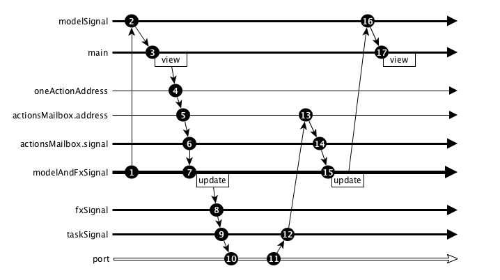

Effects 2
Following is an example application using Effects that replicates whan StartApp does under the hood.
The example below is complex, if you find it difficult to understand don't worry too much. We will be using StartApp in the next chapter, which simplifies this code.
Sample application
First we need to install elm-effects:
elm package install evancz/elm-effects
Application:
import Html
import Html.Events as Events
import Http
import Task
import Debug
import Effects
type Action =
NoOp |
Refresh |
OnRefresh (Result Http.Error String)
type alias Model = String
view : Signal.Address Action -> Model -> Html.Html
view address message =
Html.div [] [
Html.button [
Events.onClick address Refresh
]
[
Html.text "Refresh"
],
Html.text message
]
actionsMailbox : Signal.Mailbox (List Action)
actionsMailbox =
Signal.mailbox []
oneActionAddress : Signal.Address Action
oneActionAddress =
Signal.forwardTo actionsMailbox.address (\action -> [action])
httpTask : Task.Task Http.Error String
httpTask =
Http.getString "http://localhost:3000/"
refreshFx : Effects.Effects Action
refreshFx =
httpTask
|> Task.toResult
|> Task.map OnRefresh
|> Effects.task
update : Action -> Model -> (Model, Effects.Effects Action)
update action model =
case action of
Refresh ->
(model, refreshFx)
OnRefresh result ->
let
message =
Result.withDefault "" result
in
(message, Effects.none)
_ ->
(model, Effects.none)
modelAndFxSignal : Signal.Signal (Model, Effects.Effects Action)
modelAndFxSignal =
let
modelAndFx action (previousModel, _) =
update action previousModel
modelAndManyFxs actions (previousModel, _) =
List.foldl modelAndFx (previousModel, Effects.none) actions
initial =
("-", Effects.none)
in
Signal.foldp modelAndManyFxs initial actionsMailbox.signal
modelSignal : Signal.Signal Model
modelSignal =
Signal.map fst modelAndFxSignal
fxSignal : Signal.Signal (Effects.Effects Action)
fxSignal =
Signal.map snd modelAndFxSignal
taskSignal : Signal (Task.Task Effects.Never ())
taskSignal =
Signal.map (Effects.toTask actionsMailbox.address) fxSignal
main: Signal.Signal Html.Html
main =
Signal.map (view oneActionAddress) modelSignal
port runner : Signal (Task.Task Effects.Never ())
port runner =
taskSignal
https://github.com/sporto/elm-tutorial-assets/blob/master/code/040_effects/Effects.elm
In order to run this app, you will also need to have the node json-server, refer to the Task chapter for the instructions on setting it up.
This application display a "Refresh" button. When this button is clicked the application sends an ajax request to the node server, then the result is displayed when it comes back.
As usual, let's go through the parts of this app:
actions
type Action =
NoOp |
Refresh |
OnRefresh (Result Http.Error String)
The Refresh action will trigger the ajax request.
When the request is finished we will trigger a OnRefresh action. This OnRefresh action will have a Result as payload. This result may have an http error or a string. This string is the response body from the server when the result is successful.
view
The view display the "Refresh" button and a message (this message will be the response from the server). When the "Refresh" button is clicked we send a Refresh action to the provided address.
actionsMailbox
A mailbox where to send action messages. Note however that this mailbox expects a list of actions, not just one action: Signal.Mailbox (List Action).
This is because the way effects work. Effects is a collection of effects, not just one. When effects are run and translated back to actions they will produce a list of them.
oneActionAddress
oneActionAddress : Signal.Address Action
oneActionAddress =
Signal.forwardTo actionsMailbox.address (\action -> [action])
Events.onClick address Refresh on the view sends only one action. So the address receiving this message has to be able to deal with only one action. However our mailbox is set to receive list of actions.
We need way of creating an address that takes only one action. And we need to forward that action to another address, but while doing that we need to convert that action to a list of actions.
This is what Signal.forwardTo does, it forwards a message to an address and it allows us to change the message in some way (\action -> [action]).
Signal.forwardTo returns an address. In this case it is an address that takes one action: Signal.Address Action.
We will be using this address for the view.
httpTask
This creates a http task.
refreshFx
refreshFx : Effects.Effects Action
refreshFx =
httpTask
|> Task.toResult
|> Task.map OnRefresh
|> Effects.task
In this application we are passing Effects around. So we convert the httpTask to an effect. There is quite a bit happening here:
httpTask |> Task.toResult
httpTask by itself is a task that may fail or succeed. Task.toResult converts it to a task that only succeeds, but the success value is a Result type. This result can be either (Err Http.Error) or (Ok String). In this way we don't throw away the error.
|> Task.map OnRefresh
At the top of the file we declare a OnRefresh (Result Http.Error String) action. On the previous line we converted httpTask to a task that always succeeds with (Result Http.Error String), which is exactly what the OnRefresh action expects as payload.
Task.map transforms the task to another task, in this case a task that always succeeds with OnRefresh (Result ...) as the result.
Effects.task creates an effect from a task. This is what we will be passing around.
update
Our update function takes an action and the current model. Based on the action it returns a tuple with the new model and the effects to run.
Note the OnRefresh result -> in here we extract the result payload by using pattern matching.
modelAndFxSignal
modelAndFxSignal : Signal.Signal (Model, Effects.Effects Action)
modelAndFxSignal =
let
modelAndFx action (previousModel, _) =
update action previousModel
modelAndManyFxs actions (previousModel, _) =
List.foldl modelAndFx (previousModel, Effects.none) actions
initial =
("-", Effects.none)
in
Signal.foldp modelAndManyFxs initial actionsMailbox.signal
This function is the core of the application and thus fairly complex. This function:
- Takes the signal coming from the mailbox (which is a list of actions)
- Maps through all the actions in that signal, calling
updatefor each action - While running
updateon each action we collect a list ofeffectsto run and we change the model - Finally
foldpkeeps the latest model and effect for the next time.
This function returns a signal with the signature: Signal.Signal (Model, Effects.Effects Action). So a signal with a tuple (model, effects).
modelSignal
In order to render the view with changes over time we will need signal with the model. We could use the signal with the (model, effects). But view doesn't really care about the effects, so we create a new signal that just carries the model:
modelSignal : Signal.Signal Model
modelSignal =
Signal.map fst modelAndFxSignal
fxSignal
We need to send the effects to a port, so we do the same as we did with the model i.e. we create a new signal that only carries the effects:
fxSignal : Signal.Signal (Effects.Effects Action)
fxSignal =
Signal.map snd modelAndFxSignal
taskSignal
taskSignal : Signal (Task.Task Effects.Never ())
taskSignal =
Signal.map (Effects.toTask actionsMailbox.address) fxSignal
After a task finishes we want to send its result back to our application. We map the effects coming from fxSignal through (Effects.toTask actionsMailbox.address). Effects.toTask takes and address and effects. When the effects are run toTask sends the resulting messages to the address.
An example should make the clearer:
DIAGRAM
main
main maps the model signal through the view.
port runner
Finally, we take the signal produced by taskSignal and send it to a port. Without this our application wouldn't run any Ajax requests.
Diagram
Here is a diagram of what is happening:

- We start with an initial model.
modelSignalpicks up this initial modelmainmapsmodelSignalrendering theview- When the user clicks we send an action to
oneActionAddress - This action is forwarded to
actionsMailbox.address - This mailbox produces a signals with the actions
modelAndFxSignalpicks up the changes fromactionsMailbox.signaland callsupdate. Update returns a new model and effects to runfxSignalpicks up the effects frommodelAndFxSignaltaskSignalconvertsfxSignalinto a signal of tasksportruns thetasksproduced bytaskSignal- When the task is done the port will publish the result
taskSignalpicks up the results fromporttaskSignalsends messages tomailbox.addresswith the resultsactionsMailboxbroadcasts the result through its signalmodelAndFxSignalpicks this signal and callsupdateagain, storing the updated modelmodelSignalpicks up the model change frommodelAndFxSignalmainmapsmodelSignalthroughview. Showing the messsage coming from the server.
Conclusion
Adding effects to our application complicates the wiring of the application a fair amount. Thankfully, we don't have to do (or understand) all these wiring directly, we can use StartApp. We will look into it in the next chapter.